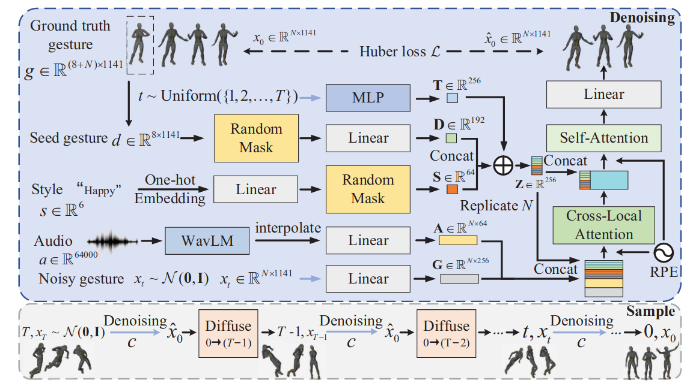
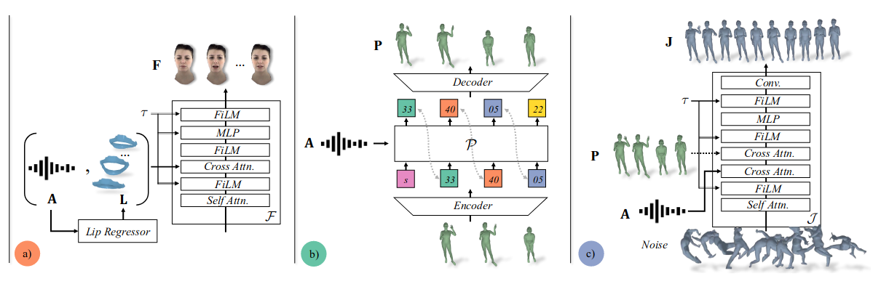
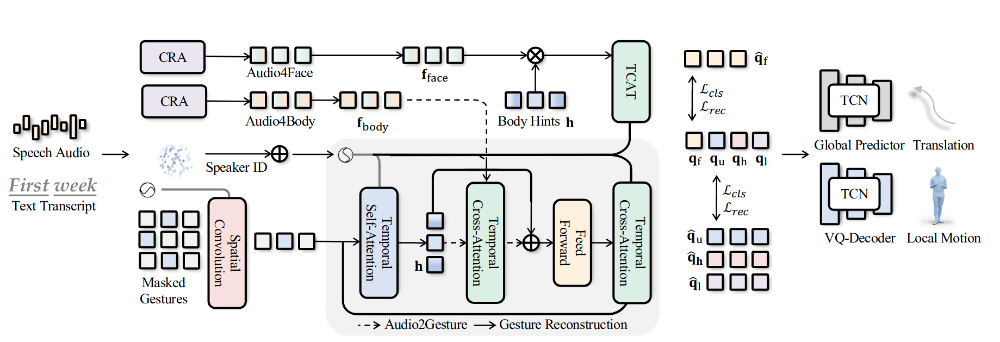

This project has been my primary focus at Skyworld. Our team's goal is to create an automated pipeline for generating
AI-driven short series. I was in charge of the actor performance aspect, specifically generating audio-driven human poses,
including body movements and hand gestures, which are crucial for delivering a coherent actor performance.
To accomplish this, I explored two approaches: motion retrieval and end-to-end motion generation.
The ultimate objectives of this project are as follows:
Develop a system for pose generation conditioned by text, speech, and music.
Enable the rhythm of body movements to be dynamically controlled by both speech and background music.
Utilize the transcript of speech to guide the generation of semantic poses.
Allow text inputs to fine-tune character poses based on semantic details, encompassing both pose content and emotional expression.
Ensure continuity in long-term pose generation for seamless animation.
Optimize the system for efficient pose generation.
Implementation Method
Motion retrieval
End-to-end gesture generation methods has shown really great results, but they connot convey appropriate semantic information. Rule based
method can generate gesture with satified semantic information. Based on this, I tried to build a motion bank and design retrival rules. More details are
shown here Motion retrival
End-to-end methods
Diffusion-based methods
DiffusionstyleGesture: This method, based on transformer-diffusion, produces results with excellent fluidity. However,
the movements tend to be larger, making it more suitable for speech scenarios. This is primarily because the training data is predominantly from speech-related scenes.

Audio2Photoreal: This approach is based on a transformer-VAE-diffusion method and consists of two stages: coarse and refine. The coarse stage uses an audio-conditioned
VQ-VAE to generate low-frame-rate motion. The refine stage employs a diffusion model, conditioned on both the audio and the motion output from the coarse stage.
The authors found that when the condition is based solely on audio, the resulting motion lacks the realism and diversity that incorporating coarse motion provides.
Although this work targets two-person dialogue scenarios, the model structure is similar to that used for a single person. However, the training data is a self-collected
two-person dialogue dataset. The results achieved are primarily subtle upper-body movements and a certain degree of upper limb motion.
The repository includes a feature to extract the body motion generated by Audio2Photoreal, which can then be used to drive a MetaHuman character.

Transformer-based method
EMAGE: This method uses a fully transformer-based architecture. For network structure considerations, due to the significant differences in movement patterns and ranges
for different body parts, it generates hand, upper body, and lower body movements separately. The training data is predominantly from speech scenarios, which results in
poorer experimental outcomes with many redundant movements. The dataset used is BEAT2 (SMPL-X), which is divided into BEAT2-Standard and BEAT2-Additional.
BEAT2-Standard (27 hours) consists of acted speech with high movement diversity, while BEAT2-Additional (30 hours) includes spontaneous movements. It might be beneficial
to train using only BEAT2-Additional. For improving generation quality, EMAGE could be considered as a backbone integrated into the refine stage of audio2photoreal.

End2end + Retrieval
Through combine end-to-end method and rule-based method, we can get human motions, which are both semantically meaningful and smooth. Here are some method, we can refer to.
The core approach involves retrieving poses from the semantic pose bank to identify and insert appropriate poses at their specified positions within the
text. I experimented with a word-level retrieval method, utilizing ChatGPT to generate relevant semantic words based on prompts. For Pose Space Merging,
we face two primary challenges:
Seamless Transitions: To ensure smooth transitions between poses, implement linear interpolation across 10 frames before and after the merge
point. This technique helps to create fluid motion and avoid abrupt changes.
Foot Slipping: Resolve foot slipping issues by ensuring that the lower body of the semantic pose remains aligned with the base pose.
This requires stabilizing the lower body in a fixed position to maintain consistency and prevent unintended foot movement.
The results were often redundant with mismatched contextual information. It may be beneficial to consider sentence-level Retrieval methods in the future for better context matching.